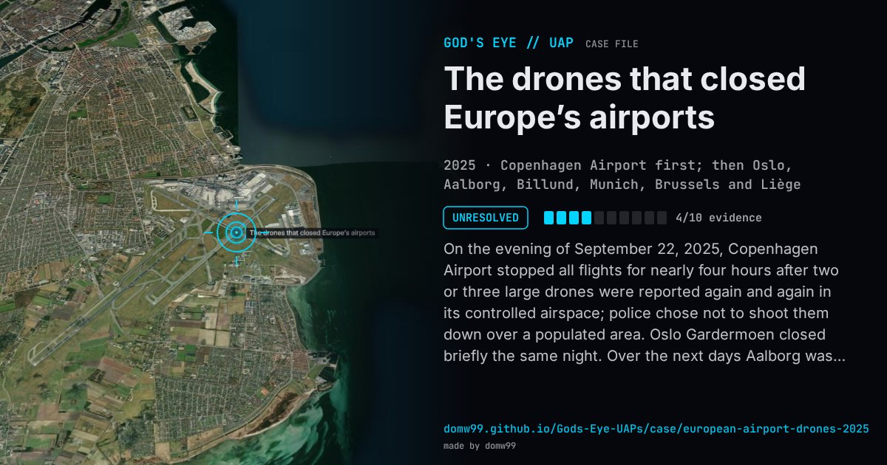

The drones that closed Europe’s airports

On the evening of September 22, 2025, Copenhagen Airport stopped all flights for nearly four hours after two or three large drones were reported again and again in its controlled airspace; police chose not to shoot them down over a populated area. Oslo Gardermoen closed briefly the same night. Over the next days Aalborg was shut twice, Billund for an hour and reports came from Esbjerg, Sønderborg and the Skrydstrup air base. On October 2 and 3 Munich stopped flights for hours, stranding thousands, and in November Brussels and Liège closed briefly. It is the European counterpart of the New Jersey drones of 2024: an airport closed is a fact, but what was in the air is still not established.
Explanation
No one has been identified. Danish leaders at first spoke of a “capable actor” and Russia was widely suspected, but in June 2026 Copenhagen police said they had been unable to prove or rule out that drones were over the airport at all on September 22, and that they “were not clear enough” with their reservations.
What was seen
Shape: Two or three large drones with lights, seen repeatedly in the airport’s airspace
Witnesses: Copenhagen police and airport staff; police, air traffic control and the public at the later airports
Duration: Copenhagen closed for nearly four hours; the closures ran from September to November
Sources
Browse
- 2020s
- Unresolved
- Aviation encounters
- Official government documents
- Many independent witnesses
- Police witnesses
- Lights and fireballs